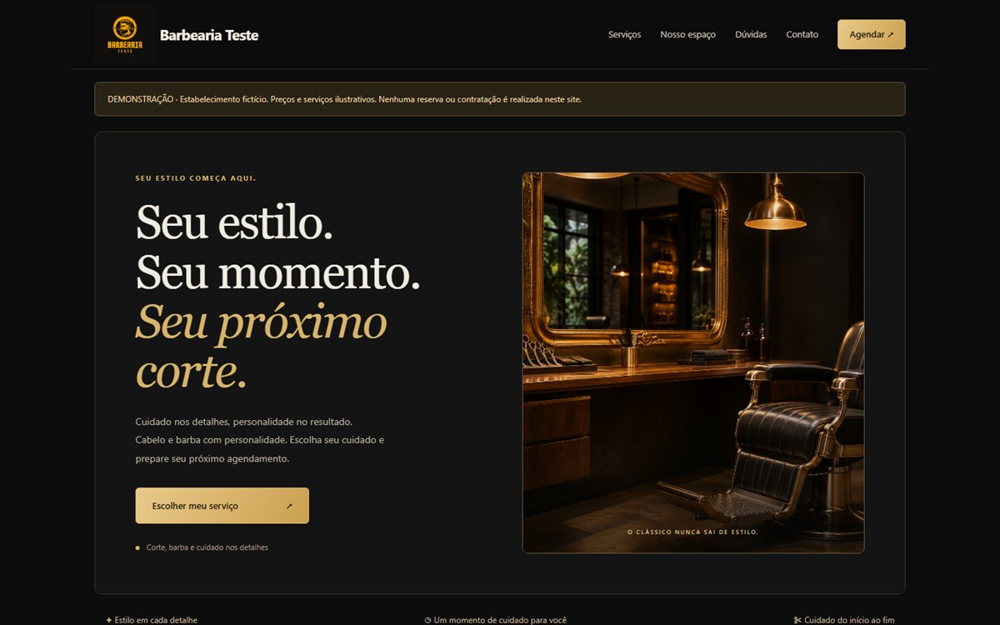
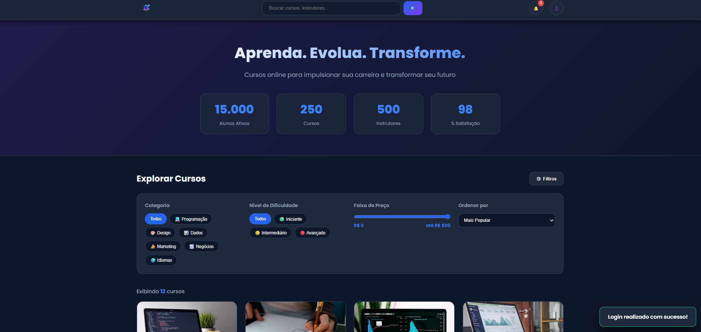
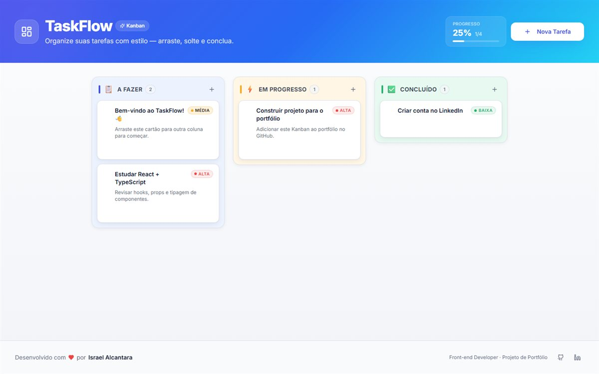
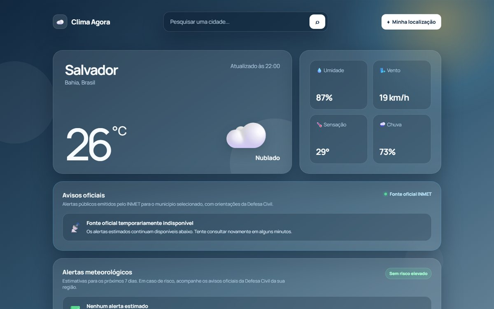

Disponível para estágio e projetos
DESENVOLVEDOR FULL STACK
Eu construo sistemas web de ponta a ponta.
Sou Israel Alcantara, desenvolvedor full stack em Salvador/BA, com experiência como dev front-end na Horizon Metrics e estudante de Engenharia de Software na UNIFACS. Crio aplicações completas — interface, API, banco de dados e deploy — com foco em usabilidade, segurança e resultado.
const developer = {
name: "Israel Alcantara",
role: "Full Stack",
front: ["React", "TypeScript"],
back: ["Node.js", "PostgreSQL"],
mindset: "build & improve"
};React ⚛
Node.js + PostgreSQL DB
ReactTypeScriptNode.jsPostgreSQLSupabaseNext.jsPythonFastAPIDockerTailwind CSSGitPlaywright
01
SOBRE MIM
Tecnologia com lógica,
curiosidade e propósito.
Minha formação em Engenharia de Software vem sendo construída na prática: estudo fundamentos de programação, desenvolvimento web, redes, segurança e arquitetura de sistemas, enquanto transformo esse conhecimento em projetos reais.
Hoje atuo como desenvolvedor full stack: construo interfaces em React e JavaScript, APIs em Node.js e Python, modelo bancos PostgreSQL e cuido do deploy. Meu projeto mais recente é um sistema de agendamento completo para barbearias, com painel do proprietário, contas de clientes e regras de negócio garantidas no próprio banco.
Na Horizon Metrics desenvolvi interfaces e painéis com React e Next.js, integrados a APIs REST, trabalhando em equipe com Git e GitHub. Também participei do Hackathon CARF 2025 na UFBA e gosto de levar cada ideia do protótipo ao produto publicado, com testes e documentação.
02
EXPERIÊNCIA
Onde já coloquei
a mão no código.
-
ago/2025 — mar/2026
Horizon Metrics
Desenvolvedor Front-End
- Desenvolvimento de interfaces e painéis dinâmicos com React e Next.js.
- Componentes reutilizáveis, com foco em modularidade e responsividade.
- Integração com APIs REST e melhorias contínuas de desempenho e UX.
- Versionamento com Git e fluxos de trabalho no GitHub, em colaboração com o time.
-
out/2025
Hackathon CARF 2025 · Escola de Administração da UFBA
GIPC.AI — desenvolvimento em equipe
- Solução para gestão inteligente de pessoas e mapeamento de competências, criada por uma equipe multidisciplinar.
- 50h de evento, com 100% de frequência e nota 10.
-
jun — nov/2024
CIEE · Hiperferro Comercial de Aços
Jovem Aprendiz — Administrador de Banco de Dados
- Capacitação de 400h teóricas em banco de dados, junto com 1.440h de atividades práticas na empresa.
-
em andamento
Universidade Salvador — UNIFACS
Bacharelado em Engenharia de Software · 5º semestre
- Programação, desenvolvimento web e mobile, redes, segurança e arquitetura de sistemas.
03
HABILIDADES
Do front ao banco:
minha stack completa.
FRONTHTML & CSSSemântica & responsividade
FRONTJavaScriptInteratividade & DOM
FRONTTypeScriptTipagem e escala
FRONTReactInterfaces modernas
FRONTNext.jsAplicações web
FRONTTailwind CSSDesign rápido
BACKNode.jsAPIs & servidores
BACKPythonLógica & automação
BACKFastAPIAPIs REST
BACKAutenticaçãoSessões, JWT & senhas
DADOSPostgreSQLSQL & modelagem
DADOSSupabaseAuth, RLS & funções
DADOSSQLiteBanco embarcado
FERRAMENTASDockerContainers & deploy
FERRAMENTASGit & GitHubVersionamento & Pages
FERRAMENTASTestesnode:test & Playwright
04
PROJETOS
Algumas ideias que saíram
do papel e viraram código.

PROJETO EM DESTAQUE · 01 · FULL STACK
Barbearia
Sistema completo de agendamento: o cliente escolhe serviço, profissional e horário, cria conta, remarca e cancela; o proprietário gerencia marca, serviços, equipe e agenda num painel próprio. Banco PostgreSQL no Supabase com RLS e regras no banco que impedem reservas sobrepostas, mesmo com pedidos simultâneos.

PROJETO EM DESTAQUE · 02
Evolui
Plataforma de aprendizagem com autenticação, catálogo de cursos, filtros, notificações, perfil e acompanhamento de progresso.

PROJETO · 03
TaskFlow
Kanban responsivo para organização de tarefas, com colunas de fluxo, prioridades, barra de progresso e interação por arrastar e soltar.

PROJETO · 04
Clima Agora
Previsão do tempo em tempo real com busca por cidade e geolocalização, umidade, vento, sensação térmica, chance de chuva e avisos oficiais do INMET com alertas para os próximos 7 dias.
Projetos interativos
JavaScript puro · DOM · lógica
Mais projetos
Ver GitHub ↗05
CURSOS & CERTIFICAÇÕES
Estudo contínuo,
da base à prática.
0cursos e certificações
0hde estudo comprovado
0instituições
06
CONTATO
Vamos construir algo
juntos?
Estou disponível para oportunidades de estágio, projetos, freelas e novas conexões profissionais.